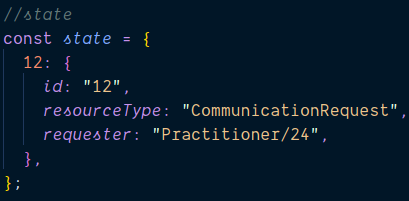

Le state dans les applications front
Sommaire
- Un peu d'histoire
- Redux
- Les middleware
- Selector
- Post redux
Un peu d'histoire

1994-2012: La genèse
Server side rendering en php et widget jquery. La vie était simple pas besoin de state
2012: La révolution des single page app

Angular
Reality
LA solution: State global
qu'est ce qui se passe quand Matthieu fraichement diplomé doit architecturer un state global?
- un fichier de 4000 lignes
- Pas de typage
- Pas de test
Dan à la rescousse
Redux
Les limites de react
React data flow
React data flow
React data flow
reduce
const items = [
{type: 'vegetable', name: 'carrot'},
{type: 'vegetable', name: 'green beans'},
{type: 'fruit', name: 'apple'}
]
const cart = {fruit: [], vegetable: []}
function organiseCart = (organised, item) => {
organised[item.type].push(item);
return organised;
}
const organisedCart = items.reduce(organiseCart, cart);
{
"fruit":[
{"type":"fruit","name":"apple"}
],
"vegetable":[
{"type":"vegetable","name":"carrot"},
{"type":"vegetable","name":"green beans"}
]
}
Redux - Action
{
type: 'ADD_CR',
payload: {
id: '12',
resourceType: 'CommunicationRequest',
requester: 'Practitioner/24'
}
}
Redux - Reducer
const initialState = {};
function crReducer(state = initialState, action) {
if(action.type === 'ADD_CR') {
return {
...state,
[action.payload.id]: action.payload
}
}
return state
}
Nouveau State

L'intégralité du code de redux
const state = actions.reduce(reducer, initialState)
Lib React-Redux
donne accès au state à des composants
permet de dispatch des actions pour modifier le state
Retournons à notre exemple
En résumé
- redux administre un state unique et accessible partout dans une app react
- on remplit le state en dispatchant des actions
Communication avec l'API
Communication avec l'API
Les middlewares
Gestion des effets de bord

redux thunk
surcouche d'action
redux loop
surcouche de reducer
redux sagas
Selector
Qu'est ce qui declenche le rerendering d'un composant react?
Comment lier le state à un component
Selector
Redux est mort :(

React context + useReducer

React context
introduit en react 16.3
UseReducer
introduit dans react 16.8
graphql + appollo stack
firebase
Question?